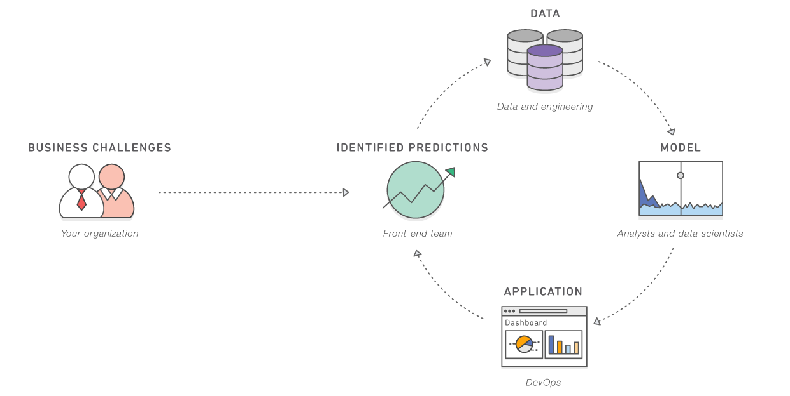

===> HOME <===
What is artificial intelligence?
Artificial intelligence (AI) is the field of computer science dedicated to solving cognitive problems commonly associated with human intelligence, such as learning, creation, and image recognition. Modern organizations collect large volumes of data from diverse sources like smart sensors, human-generated content, monitoring tools, and system logs. The goal with AI is to create self-learning systems that derive meaning from data. Then, AI can apply that knowledge to solve new problems in human-like ways. For example, AI technology can respond meaningfully to human conversations, create original images and text, and make decisions based on real-time data inputs. Your organization can integrate AI capabilities in your applications to optimize business processes, improve customer experiences, and accelerate innovation.
How did artificial intelligence technology develop?
In Alan Turing’s seminal paper from 1950, "Computing Machinery and Intelligence," he considered whether machines could think. In this paper, Turing first coined the term artificial intelligence and presented it as a theoretical and philosophical concept.
Between 1957 and 1974, developments in computing allowed computers to store more data and process faster. During this period, scientists further developed machine learning (ML) algorithms. The progress in the field led agencies like the Defense Advanced Research Projects Agency (DARPA) to create a fund for AI research. At first, the main goal of this research was to discover whether computers could transcribe and translate spoken language.
Through the 1980s, the boosted funding available and the expanding algorithmic toolkit scientists used in AI streamlined development. David Rumelhart and John Hopfield published papers on deep learning techniques, which showed that computers could learn from experience.
From 1990 to the early 2000s, scientists achieved many core goals of AI, like beating the reigning world chess champion. With more computing data and processing power in the modern age than in previous decades, AI research is now more common and accessible. It's rapidly evolving into artificial general intelligence so software can perform complex tasks. Software can create, make decisions, and learn on their own, tasks previously limited to humans.
What are the benefits of artificial intelligence?
Artificial intelligence has the potential to offer a range of benefits to various industries.
Solve complex problems
AI technology can use ML and deep learning networks to solve complex problems with human-like intelligence. AI can process information at scale—encountering patterns, identifying information, and providing answers. You can use AI to solve problems in a range of fields like fraud detection, medical diagnosis, and business analytics.
Increase business efficiency
Unlike humans, AI technology can work 24/7 without decreasing rates of performance. In other words, AI can perform manual tasks without errors. You can allow AI to focus on repetitive, tedious tasks, so you can use human resources on other areas of a business. AI can decrease employee workloads while streamlining all business-related tasks.
Make smarter decisions
AI can use ML to analyze large volumes of data faster than any human being could by comparison. AI platforms can spot trends, analyze data, and provide guidance. With data forecasting, AI can help to suggest the best course of future action.
Automate business processes
You can train AI with ML to perform tasks precisely and quickly. This can increase operational efficiencies by automating parts of business that employees struggle with or find boring. Equally, you can use AI automation to free up employee resources for more complex and creative work.

What are the practical applications of artificial intelligence?
Artificial intelligence has a wide range of applications. While not an exhaustive list, here's a selection of examples that highlight the diverse use cases of AI.
Intelligent document processing
Intelligent document processing (IDP) translates unstructured document formats into usable data. For example, it converts business documents like emails, images, and PDFs into structured information. IDP uses AI technologies like natural language processing (NLP), deep learning, and computer vision to extract, classify, and validate data.
For example, HM Land Registry (HMLR) handles property titles for more than 87 percent of England and Wales. HMLR caseworkers compare and review complex legal documents related to property transactions. The organization deployed an AI application to automate document comparison, which cut review time by 50 percent and supercharged the property transfers approval process. For more information, read how HMLR uses Amazon Textract.
Application performance monitoring
Application performance monitoring (APM) is the process of using software tools and telemetry data to monitor the performance of business-critical applications. AI-based APM tools use historical data to predict issues before they occur. They can also resolve issues in real time by suggesting effective solutions to your developers. This strategy keeps applications running effectively and addresses bottlenecks.
For example, Atlassian makes products to streamline teamwork and organization. Atlassian uses AI APM tools to continuously monitor applications, detect potential issues, and prioritize severity. With this function, teams can rapidly respond to ML-powered recommendations and resolve performance declines.
Predictive maintenance
AI-enhanced predictive maintenance is the process of using large volumes of data to identify issues that could lead to downtime in operations, systems, or services. Predictive maintenance allows businesses to address potential issues before they occur, which reduces downtime and prevents disruptions.
For example, Baxter uses 70 manufacturing sites worldwide and operates 24/7 to deliver medical technology. Baxter employs predictive maintenance to automatically detect abnormal conditions in industrial equipment. Users can implement effective solutions ahead of time to reduce downtime and improve operational efficiencies. To learn more, read how Baxter uses Amazon Monitron.
Medical research
Medical research uses AI to streamline processes, automate repetitive tasks, and process vast quantities of data. You can use AI technology in medical research to facilitate end-to-end pharmaceutical discovery and development, transcribe medical records, and improve time-to-market for new products.
As a real-world example, C2i Genomics uses artificial intelligence to run high-scale, customizable genomic pipelines and clinical examinations. By covering computational solutions, researchers can focus on clinical performance and method development. Engineering teams also use AI to reduce resource demands, engineering maintenance, and NRE costs. For more details, read how C2i Genomics uses AWS HealthOmics.
Business analytics
Business analytics uses AI to collect, process, and analyze complex datasets. You can use AI analytics to forecast future values, understand the root cause of data, and reduce time-consuming processes.
For example, Foxconn uses AI-enhanced business analytics to improve forecasting accuracy. They reached an 8 percent increase in forecasting accuracy, leading to $533,000 in annual savings in their factories. They also use business analytics to reduce wasted labor and increase customer satisfaction through data-driven decision-making.
What are the key artificial intelligence technologies?
Deep learning neural networks form the core of artificial intelligence technologies. They mirror the processing that happens in a human brain. A brain contains millions of neurons that work together to process and analyze information. Deep learning neural networks use artificial neurons that process information together. Each artificial neuron, or node, uses mathematical calculations to process information and solve complex problems. This deep learning approach can solve problems or automate tasks that normally require human intelligence.
You can develop different AI technologies by training the deep learning neural networks in different ways. We give some key neural network-based technologies next.
Natural language processing
NLP uses deep learning algorithms to interpret, understand, and gather meaning from text data. NLP can process human-created text, which makes it useful for summarizing documents, automating chatbots, and conducting sentiment analysis.
Computer vision
Computer vision uses deep learning techniques to extract information and insights from videos and images. Using computer vision, a computer can understand images just like a human would. You can use computer vision to monitor online content for inappropriate images, recognize faces, and classify image details. It is critical in self-driving cars and trucks to monitor the environment and make split-second decisions.
Generative AI
Generative AI refers to artificial intelligence systems that can create new content and artifacts such as images, videos, text, and audio from simple text prompts. Unlike past AI limited to analyzing data, generative AI leverages deep learning and massive datasets to produce high-quality, human-like creative outputs. While enabling exciting creative applications, concerns around bias, harmful content, and intellectual property exist. Overall, generative AI represents a major evolution in AI capabilities to generate new content and artifacts in a human-like manner.
Speech recognition
Speech recognition software uses deep learning models to interpret human speech, identify words, and detect meaning. The neural networks can transcribe speech to text and indicate vocal sentiment. You can use speech recognition in technologies like virtual assistants and call center software to identify meaning and perform related tasks.
What are the key components of AI application architecture?
Artificial intelligence architecture consists of four core layers. Each of these layers uses distinct technologies to perform a certain role. Next is an explanation of what happens at each layer.
Layer 1: data layer
AI is built upon various technologies like machine learning, natural language processing, and image recognition. Central to these technologies is data, which forms the foundational layer of AI. This layer primarily focuses on preparing the data for AI applications. Modern algorithms, especially deep learning ones, demand vast computational resources. So, this layer includes hardware that act as a sub-layer, which provides essential infrastructure for training AI models. You can access this layer as a fully managed service from a third-party cloud provider.
Layer 2: ML frameworks and algorithm layer
ML frameworks are created by engineers in collaboration with data scientists to meet the requirements of specific business use cases. Developers can then use prebuilt functions and classes to construct and train models easily. Examples of these frameworks include TensorFlow, PyTorch, and scikit-learn. These frameworks are vital components of the application architecture and offer essential functionalities to build and train AI models with ease.
Layer 3: model layer
At the model layer, the application developer implements the AI model and trains it using the data and algorithms from the previous layer. This layer is pivotal for the AI system's decision-making capabilities.
Here are some of the key components of this layer.
Model structure
This structure determines a model's capacity, comprising layers, neurons, and activation functions. Depending on the problem and resources, one might choose from feedforward neural networks, convolutional neural networks (CNNs), or others.
Model parameters and functions
The learned values during training, such as neural network weights and biases, are crucial for predictions. A loss function evaluates the model's performance and aims to minimize the discrepancy between the predicted and true outputs.
Optimizer
This component adjusts the model parameters to reduce the loss function. Various optimizers like gradient descent and Adaptive Gradient Algorithm (AdaGrad) serve different purposes.
Layer 4: application layer
The fourth layer is the application layer, which is the customer-facing part of AI architecture. You can ask AI systems to complete certain tasks, generate information, provide information, or make data-driven decisions. The application layer allows end users to interact with AI systems.
What are the challenges in AI implementation?
AI has a number of challenges that make implementation more difficult. The following roadblocks are some of the most common challenges with AI implementation and usage.
Data governance
Data governance policies must abide by regulatory restrictions and privacy laws. To implement AI, you must manage data quality, privacy, and security. You are accountable for customer data and privacy protection. To manage data security, your organization should have a clear understanding of how AI models use and interact with customer data across each layer.
Technical difficulties
Training AI with machine learning consumes vast resources. A high threshold of processing power is essential for deep learning technologies to function. You must have robust computational infrastructure to run AI applications and train your models. Processing power can be costly and limit your AI systems' scalability.
Data limitations
To train unbiased AI systems, you need to input huge volumes of data. You must have the sufficient storage capacity to handle and process the training data. Equally, you must have effective management and data quality processes in place to ensure the accuracy of the data you use for training.